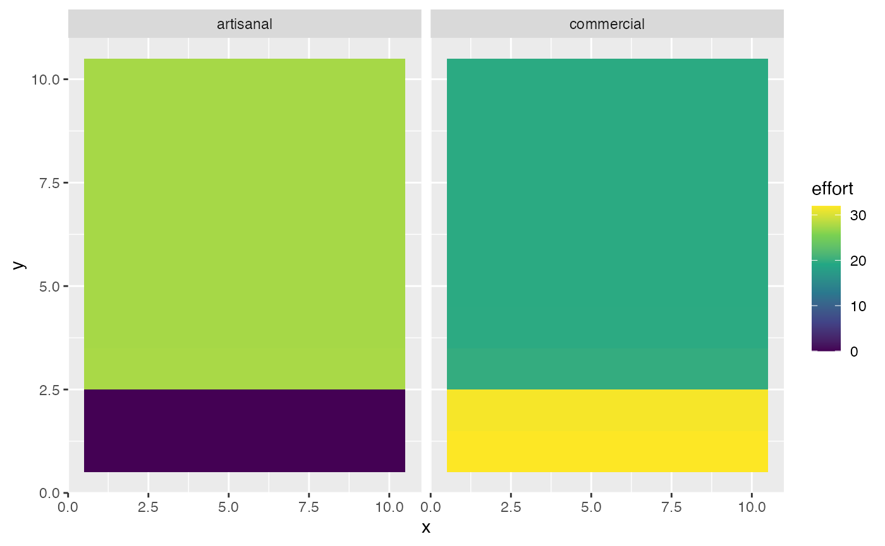
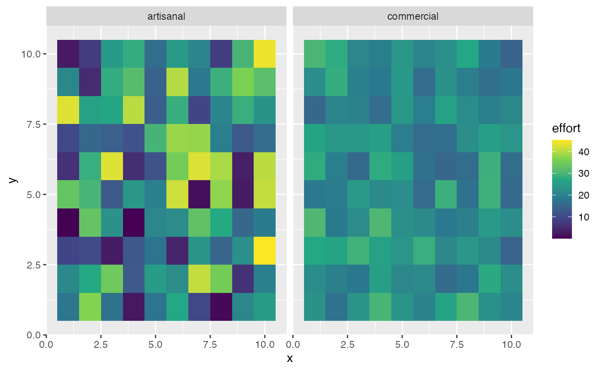

Manual Fishing Grounds and Effort Allocation
Source:vignettes/articles/manual_fleets.Rmd
manual_fleets.Rmd
library(marlin)
library(tidyverse)
#> ── Attaching core tidyverse packages ──────────────────────── tidyverse 2.0.0 ──
#> ✔ dplyr 1.1.4 ✔ readr 2.1.5
#> ✔ forcats 1.0.0 ✔ stringr 1.5.1
#> ✔ ggplot2 3.5.1 ✔ tibble 3.2.1
#> ✔ lubridate 1.9.3 ✔ tidyr 1.3.1
#> ✔ purrr 1.0.2
#> ── Conflicts ────────────────────────────────────────── tidyverse_conflicts() ──
#> ✖ dplyr::filter() masks stats::filter()
#> ✖ dplyr::lag() masks stats::lag()
#> ℹ Use the conflicted package (<http://conflicted.r-lib.org/>) to force all conflicts to become errorsThe default behavior of marlin is to allocate fishing
effort in space based on the fleet_model objective function
(e.g. maximize revenue).
However, fishing fleets often face constraints in where they can fish. Small vessels may be unable to safely access fishing grounds in offshore waters. Regulations may prevent specific fleets from entering specific areas.
To reflect this, marlin allows users to specify a
fishing_grounds parameter to each fleet. The fishing fleet
will only be able to allocate its fishing effort within the available
fishing grounds. For really complex cases, users can also simply supply
set spatial_allocation to manual and supply a
fishing_grounds matrix with values in each cell scaled
between 1 and 0 to reflect the proportion of effort in a given spatial
area.
Note that the more fishing effort is constrained, the greater the
possibility that tune_fleets will be unable to match
desired levels of initial depletion if those initial depletion levels
are low. For example, if initial depletion is set to 0.01 but the
fishing grounds are constrained such that fishing is only possible in a
tiny fraction of the fishing grounds, no amount of effort will be able
to result in the desired amount of depletion.
Fishing Grounds
We’ll first create a generic snapper critter
resolution <- 10 # resolution is in squared patches, so 20 implies a 20X20 system, i.e. 400 patches
years <- 50
fauna <-
list(
"snapper" = create_critter(
scientific_name = "lutjanus griseus",
adult_diffusion = 10,
fished_depletion = .25,
resolution = resolution
)
)We’ll then create two fleets, one of which is only allowed to fish in a few specific areas. Note that when there is only one fleet, fishing grounds function identically to no-take MPAs. The distinction is that fishing grounds can be made fleet specific, whereas no-take MPAs apply to all fleets, so in cases where multiple fleets are simulated specific fleets can be excluded from specific fishing grounds but not others.
To illustrate, we’ll create two fleets that are identical except in their fishing grounds.
fishing_grounds <- expand.grid(x = 1:resolution, y = 1:resolution) |>
mutate(fishing_ground = TRUE)
fishing_grounds$fishing_ground[1:20] <- FALSE
fleets <- list(
"artisanal" = create_fleet(
list("snapper" = Metier$new(
critter = fauna$snapper,
p_explt = 1
)
),
base_effort = resolution ^ 2,
resolution = resolution,
fishing_grounds = fishing_grounds
),
"commercial" = create_fleet(
list("snapper" = Metier$new(
critter = fauna$snapper,
p_explt = 1
)
),
base_effort = resolution ^ 2,
resolution = resolution
)
)
fleets <- tune_fleets(fauna, fleets, tune_type = "depletion")We’ll then run the simulation forward and examine the results, noting that the artisinal fleet only applies fishing effort in its defined fishing grounds.
fishing_ground_sim <- simmar(fauna = fauna,
fleets = fleets,
years = years)
proc_sim <- process_marlin(fishing_ground_sim)
plot_marlin(proc_sim, plot_var = "ssb", plot_type = "space")
#> Warning in plot_marlin(proc_sim, plot_var = "ssb", plot_type = "space"): Can
#> only plot one time step for spatial plots, defaulting to last of the supplied
#> steps
fleet_summary <- proc_sim$fleets |>
filter(step == max(step)) |>
group_by(fleet,x,y) |>
summarise(catch = sum(catch),
effort = sum(effort)) |>
mutate(cpue = catch / effort)
#> `summarise()` has grouped output by 'fleet', 'x'. You can override using the
#> `.groups` argument.
fleet_summary |>
ggplot(aes(x,y,fill = catch)) +
geom_tile() +
facet_wrap(~fleet) +
scale_fill_viridis_c()
fleet_summary |>
ggplot(aes(x,y,fill = effort)) +
geom_tile() +
facet_wrap(~fleet) +
scale_fill_viridis_c()
fleet_summary |>
ggplot(aes(x,y,fill = cpue)) +
geom_tile() +
facet_wrap(~fleet) +
scale_fill_viridis_c()
Manual Effort
As an alternative, users can manually specify the distribution of
fishing effort in space by setting
spatial_allocation = "manual" and using the
fishing_grounds input to indicate how effort should be
distributed in space.
The key distinction between this manual approach and
simply defining fishing grounds as shown in the previous example is that
defining fishing grounds simply sets the spatial bounds in which the
fleet’s normal spatial allocation strategy can take place, whereas
setting spatial_allocation to manual actually
defines the relative distribution of effort in space.
In this example, we’ll leave the commercial fleet as is, but now specify a random distribution of effort for the artisanal fleet. Note that the commercial fleet’s behavior also changes as a result through due to the manual distribution of the artisanal fleet changing the distribution of revenues in space available to the commercial fleet.
fishing_grounds <- expand.grid(x = 1:resolution, y = 1:resolution) |>
mutate(fishing_ground = runif(length(x)))
fleets <- list(
"artisanal" = create_fleet(
list("snapper" = Metier$new(
critter = fauna$snapper,
p_explt = 1
)
),
base_effort = resolution ^ 2,
resolution = resolution,
fishing_grounds = fishing_grounds,
spatial_allocation = "manual"
),
"commercial" = create_fleet(
list("snapper" = Metier$new(
critter = fauna$snapper,
p_explt = 1
)
),
base_effort = resolution ^ 2,
resolution = resolution,
spatial_allocation = "revenue"
)
)
fleets <- tune_fleets(fauna, fleets, tune_type = "depletion")
manual_fishing_ground_sim <- simmar(fauna = fauna,
fleets = fleets,
years = years)
proc_sim <- process_marlin(manual_fishing_ground_sim)
fleet_summary <- proc_sim$fleets |>
filter(step == max(step)) |>
group_by(fleet,x,y) |>
summarise(catch = sum(catch),
effort = sum(effort)) |>
mutate(cpue = catch / effort)
#> `summarise()` has grouped output by 'fleet', 'x'. You can override using the
#> `.groups` argument.
fleet_summary |>
ggplot(aes(x,y,fill = effort)) +
geom_tile() +
facet_wrap(~fleet) +
scale_fill_viridis_c()